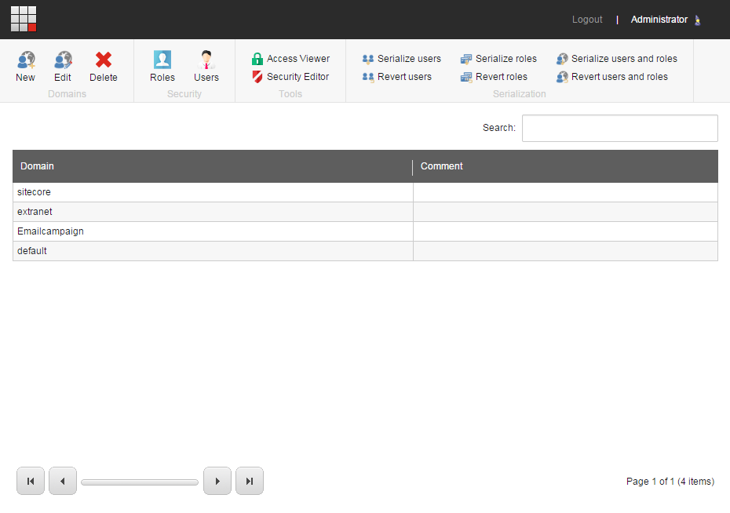

Create and edit a security domain
How to create, assign, edit and delete security domains to segment user rights.
You can create extra domains, for example, for the website of another company or a subsidiary. This is a task for a security architect.
This topic outlines how to:
To create a domain:
Log in to XM Cloud.
On the Dashboard, on the Tools tab, click Domain Manager.
In the Domain Manager, in the Domains group, click New.
 In the New Domain dialog box, enter the name of the domain and, if you want the domain to be managed locally, select the Locally Managed Domain check box.
Click OK.
Because a domain is also a security construct, it must contain users and roles before it has any meaning. You can only assign security accounts to a domain when you create a new user in the User Manager or create a new role in the Role Manager. You cannot change the domain of an existing account.
Note
A security account can only be assigned to one domain. If, for example, a user needs to access multiple domains, you must create separate roles for each domain that they need to access and make the user a member of all the relevant roles.
When you edit a domain, the only setting you can change is whether the domain should be a locally managed domain.
Note
In a locally managed domain, the users and roles are domain specific and the users can only see the items in the domain that they belong to and not the other domains in the system.
To edit a domain:
Open the Domain Manager and click the domain that you want to edit.
In the Domains group, click Edit.
In the Edit Domain dialog box, select or clear the Locally Managed Domain check box.
If you no longer need a domain, you can delete it.
Important
When you delete a domain, the security accounts that belong to the domain are not deleted. To make sure that you do not have accounts that cannot be used, you should either delete the users or roles or make sure that they are members of another role that belongs to a domain.
To delete a domain:
Open the Domain Manager and click the domain you want to delete.
In the Domains group, click Delete.